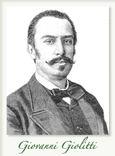
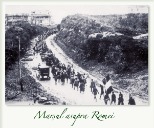
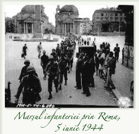

Ascensiunea se explică prin slăbiciunea forţelor politice ale monarhiei parlamentare şi prin teama inspirată de intensificarea tulburărilor sociale.
Guvernarea Nitti, care încearcă în mod curajos să normalizeze situaţia, se găseşte dezarmată în faţa valului de greve. Partidul socialist, cel care le provoacă, se orientează spre maximalismul revoluţionar. În mai 1920, Nitti demisionează şi este înlocuit cu Giolitti. El dezamorsează „pericolul roşu“ şi reuşeşte evacuarea fabricilor de către muncitori. La 31 octombrie socialiştii nu obţin decât 24% din voturi la alegerile municipale.
Giolitti semnează, la 12 noiembrie, tratatul de la Rapallo, care recunoaşte neutralitatea regiunii Fiume, şi îl determină pe D’Annunzio să capituleze, la capătul unei acţiuni purtate de trupele de uscat şi de marină. Mussolini exploatează acest reflux al forţelor de stânga. La începutul anului 1921, el controlează mai mult de 800 de secţiuni, reunind 100 000 de membri. Primeşte subvenţii de la marii proprietari de pământ şi de la industriaşi şi trece la atacul împotriva forţelor socialiste şi a sindicatelor.
Fasciştii, „apărători ai ordinii“, îşi multiplică acţiunile punitive, precum aceea care terorizează Bologna în noiembrie 1921. Poliţia închide ochii şi numeroşi complici din rândurile armatei le furnizează arme. Sunt devastate bursele de muncă, Casele Poporului, imprimeriile socialiste, cooperativele. Cei care opun rezistenţă sunt molestaţi sau obligaţi să înghită ulei de ricin. La alegerile din 1921, Mussolini intră în Camera Deputaţilor împreună cu treizeci şi cinci de fascişti. Se dezlănţuie împotriva lui Giolitti, care se retrage. Succesorul său, Bonomi, este lipsit de energie.
Mediile din armată, anumiţi oameni de stat, precum Giolitti, sunt de părere să se permită dezvoltarea unei tentative de dictatură, pentru a o îngloba şi „normaliza“ ulterior, potrivit vechii tactici, o dată ce ar fi zdrobit mişcările socialiste. Se intenţionează mai întâi folosirea popularităţii lui D’Annunzio, care nu acceptă şi îi lasă cale liberă lui Mussolini, până atunci ezitant. Congresul fascist din 7 noiembrie creează Partidul, care numără de acum înainte 320 000 de aderanţi. Bonomi demisionează la 12 februarie 1922, cedându-i locul lui Facta, personalitate de rangul al doilea.
Greva decisă de Confederaţia generală a muncii pentru 31 iulie eşuează. În luna august, reluând o idee a lui D’Annunzio, Mussolini hotărăşte „Marşul asupra Romei“. Este sprijinit de către regina-mamă Margherita şi de către ducele d’Aosta, şeful ramurii mezine a familiei, care, în caz de necesitate, i-ar fi succedat regelui. La 16 octombrie, se constituie un „Quadrumvirat“ alcătuit din generalul De Bono, Bianchi, Balbo şi De Vecchi, care, la 27 octombrie, mobilizează „cămăşile negre“ fasciste. Guvernul are o tentativă de rezistenţă, însă regele, după proclamarea stării de asediu, anulează măsurile preconizate pentru a bara calea fasciştilor şi îi oferă lui Mussolini formarea unui cabinet. La 31 octombrie, fasciştii, învingători, intră în capitală.
Continuare: III. Instaurarea dictaturii